불편한 에치고 츠마리 대지예술제
‘불편한’ 에치고츠마리 대지의 예술제
우리에게 바짝 다가온 탈-근대적 지역 공간예술
비단 공간환경 또는 공공디자인뿐 아니라 ‘디자인’이라는 보편적 개념에서도 산업화가 도래되었던 시대의 디자인은 충분히 그 역할이 명확했던 것 같다. 기능적, 합리적, 효율적 생산과정에서의 디자인은 데코레이션과 시감적 매력을 지니게 하여 상업적 가치를 올리는 수단으로 그 역할을 수행하였고 비록 폭은 좁았지만 확실한 자리를 잡고 있는 듯 했다. 하지만 토마스 쿤의 ‘Paradigm'의 개념이 그렇듯이 영원한 정설은 없다. 시대의 가치가 변해가며 정답도 달라진다. 기능, 합리, 효율이라는 모더니즘적 가치의 사회는 사람, 과정, 가치등을 위시한 새로운 패러다임 중심의 탈-구조적 개념의 목적을 향해 나가고 있다. 이는 타타르키비츠가 ’근대미학‘을 통해 밝힌 내적 디세뇨(Interno Disegno)와 외적 디세뇨(Esterno Disegno)의 가치가 교차되는 위대한 시기에 살고 있지 않은가 하는 생각을 갖게 한다. 즉, 근대화의 시대가 완성된 결과로서의 작품을 중시하고 그 결과를 중시하다보니 시감적 측면을 고려하고 보편적미와 합리적 측면을 강조하였던 외적 디세뇨(Esterno Disegno)중심의 시대였다면 예술작품을 위한 개념중심의 내적 디세뇨(Interno Disegno)는 주관적이고 창의적 가치 중심을 중요시하고 과학이나 합리적 측면으로는 해석될 수 없는 측면을 강조하는 개념이 시대의 창의적인 디자인적 가치라는 생각이 든다.
그림 1 마쓰다이역에 설치된 에치고츠마리 대지예술제 안내사인
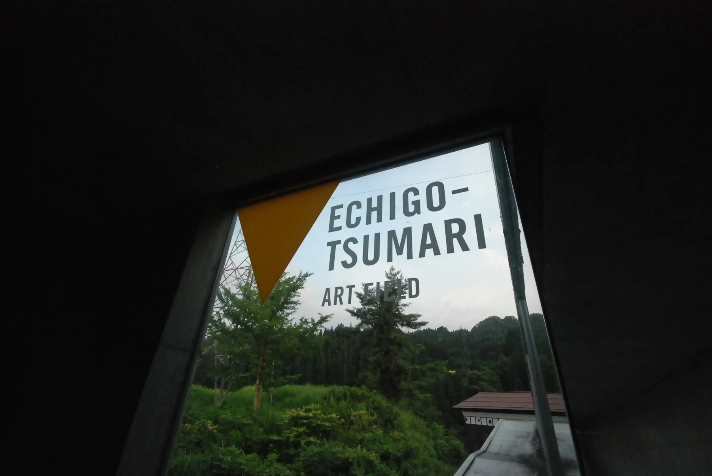
요컨대 우리는 효율적, 합리적, 표준화라는 근대화의 마술과 같은 개념에 푹 빠져 살아왔다. 그 누구도 그에 대한 반발이나 시도를 하지 않았다. 감히 말하건대, ‘에치고츠마리 아트 트리엔날레 대지 예술제’는 그러한 개념들에 반기를 드는 혁신적 공간 전시 예술의 개념을 담고 있고 또 그러한 철학이 알게 모르게 기저에 깔려 실행에 옮겨진 사례라 볼 수 있다. 에치고츠마리는 한마디로 참으로 ‘불편한’ 예술제이다. 관람객에 대한 공간적 배려는 참 찾기 힘들다. 그 뜨거운 농촌의 태양아래 인공적 그늘공간, 음료공간 그리고 친절한 안내사인 또한 발견하기 어렵다.
그림 2 여느 전시장의 화려한 수식과 장식들은 에치고츠마리에서는 살펴볼 수 없다. 노란색 안내 표식만이 이 곳이 에치고츠마리의 작품임을 알 수 있게 한다.
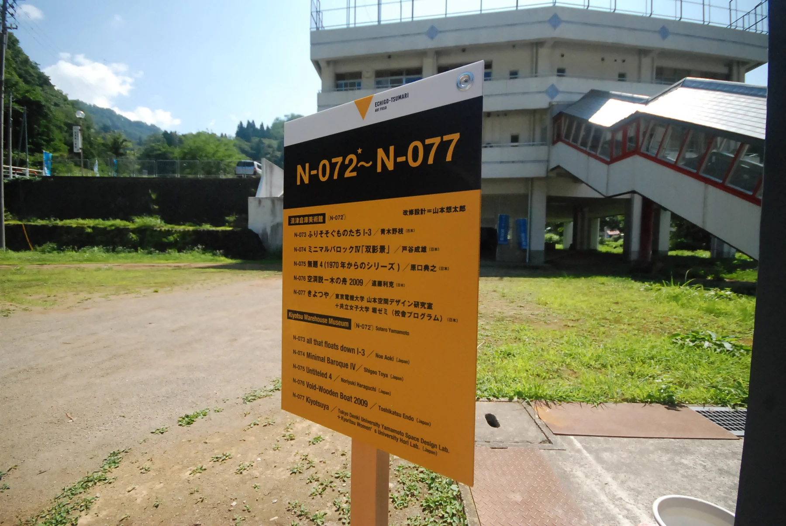
그림 3 전시장과 자연의 경계가 없는 에치고츠마리, 대지예술제의 배너사인만이 이 곳 근처가 전시장임을 알려준다.
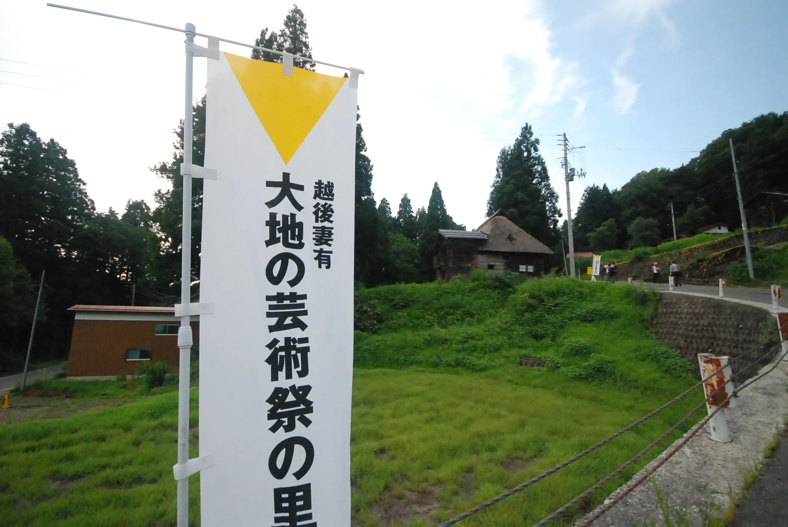
작품들도 760평방미터에 걸쳐 380여개의 작품이 흩어져 있다. 그런데 아이러니하게도 바로 여기에 ‘대지의 예술제’의 매력이 있다. 그 작품 하나하나를 찾아가는 과정 속에 좋든 싫든 에치고츠마리의 자연 경관을 바라볼 수 밖에 없고 그 지역의 농부, 주민들과 안 만날 수 없다. 획일적인 정보를 볼 수 있는 자세한 안내판 하나 없기 때문에 작품들을 몸으로 체험으로 주관적으로 느낄 수 밖에 없다. 시원한 휴게 공간 또한 없기 때문에 그 공간 그 시간에 우리는 고스란히 작품과 함께 할 수 밖에 없는 운명이다.
바로 비효율과 비합리적 배치들이 이러한 체험의 우연한 결과를 가져오게 한 것인가. 또 농촌이라는 공간의 특징에 맞는 방식인가. 380개 예술작품을 보러 온 것인가 그 설치된 작품사이의 자연 경관을 즐기러 온 것인가.
참 불편했지만 잊지 못할 추억의 예술제가 ‘대지의 예술제’이다.
“인간은 과학과 질서에 내포되어 있다”가 아닌 “인간은 자연에 내포되어 있다”는 기본 이념을 지닌 대지의 예술제에 대해 새로운 패러다임의 공간환경 가치를 살펴보고 이를 통해 비효율적인 ‘대지의 예술제’의 또 다른 숨겨진 매력을 찾아보려 한다.
Figure and Background의 경계붕괴 'Figuround'
갤러리나 미술관은 미술작품의 최적 구현효과를 위해 다양한 환경 상태를 고려하여 연출된다. 이를 위해 동선의 구조와 조도의 조절, 공간의 색채와 심지어 습도 및 온도, 청각적 효과까지 조절해 가며 그 ‘미술작품’에 집중할 수 있게 환경을 구성하게 된다. 명확한 주-종의 분리와 위계의 설정 및 그에 따른 경계의 구분은 근대적 디자인 구성의 또 하나의 특징이었다. 어디까지가 예술이고 어디까지가 일상인지가 명확하였고 그에 따른 분리는 혼돈의 대상이었다. 하지만 예술작품의 가치 또한 그 작품을 경험하고 인지하는 타자에 의해 부여된다. 그 타자 또한 예술작품의 일부가 될 수 있으며 그 공간을 둘러싼 환경 또한 작품에 포함될 수 있다. 우리가 그렇게 중요시하게 생각했던 Figure and Background는 'Figuround'가 되는 것이다.
그림 4 Seizo Tashima의 작품 Museum of Picture Book Art는 자연속에 고즈넉이 자리잡고 있다. 작품과 일상공간의 경계는 존재하지 않는다. 일상이 작품의 일부가 되어 버린다.
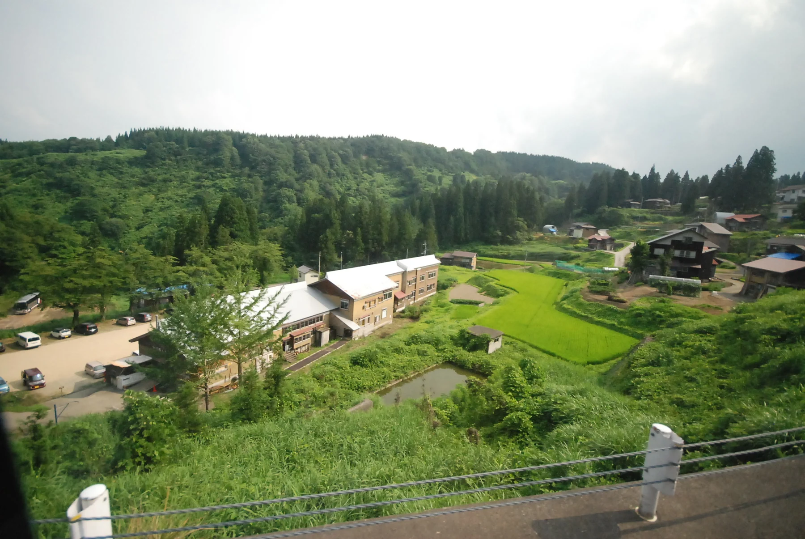
에치고츠마리에는 약 200개의 집락이 존재하며, 전통적으로 집락 단위로 공동체를 이루면서 농촌 생태계를 이루어 왔고 이를 존중하여 예술제에서는 농촌 생태계에 근거하여 지역을 존중하고 농촌의 고유성을 지키려 하였다. 아티스트들은 바로 그 배경과 이야기를 배제하지 않고 예술을 실행하였고 이는 유-무형적인 Figure and Background의 경계해체를 가져왔으며 전시공간과 일상공간의 무경계는 독특한 문화 추이대를 형성하며 예술이 일상으로 파고드는 방식을 보여주고 있다.
그림 5 Oscar Oiwad의 Scarecrow Project작품은 배경의 자연이 없으면 존재할 수 없는 배경과 유기적으로 결합된 작품중 하나이다.
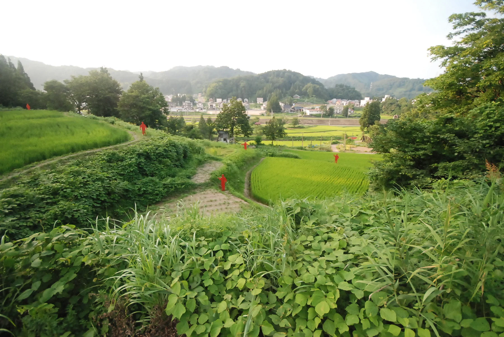
이 예술제에는 농촌의 공간을 배경으로 하지 않으면 작품 가치를 느낄 수 없는 것들이 대부분이다. 어떻게 보면 예술제의 작품들을 잘 보여주기 위해 배경을 통제해야 했을지 모른다. 하지만 에치고츠마리에서는 이러한 경계의 해체를 몸소 체험할 수 있다. 대부분의 작품에서는 Background가 되는 에치고츠마리의 자연을 더 기억에 남기게 될 것이다. ‘사토야마’라는 일본 전통 경관의 생태적 구성과 흐름의 맥락에 정합성을 이루는 작품을 만들고 농촌, 주민과의 관계성을 중심으로 이 예술제가 계획된 것을 보면 그 주제에 정확히 맞아 떨어지는 공간환경디자인의 개념이다. 예술작품과 농촌 또 주민과의 관계성을 새로 정립한다는 것은 더 명확한 경계선을 긋고 나누는 것이 아니라 서로가 어우러지고 융합되어 괴리감이 느껴지지 않을 정도로 느껴지게 하는 고도의 공간디자인적 해체 작업이다.
다시 한 번 생각해보자 에치고츠마리의 작품 중 배경(Background)없이 완성된 작품이 있는가.
그림 6 Akiko Utsumi의 작품 For Lots of Lost Windows은 언덕 위 공간에 커다란 창(窓)이 세워 놓고, 커튼을 설치해 놓고 10여m 앞에 창을 통해 차경을 통해 세상을 볼 수 있도록 계단이 있다. 자연이 있지 않으면 완성 될수 없는 작품으로 커튼을 펄럭이게 하는 바람과 뒤로 펼쳐진 아름다운 산들의 일상자연의 아름다움을 묻혀버리게 하지 않는다.
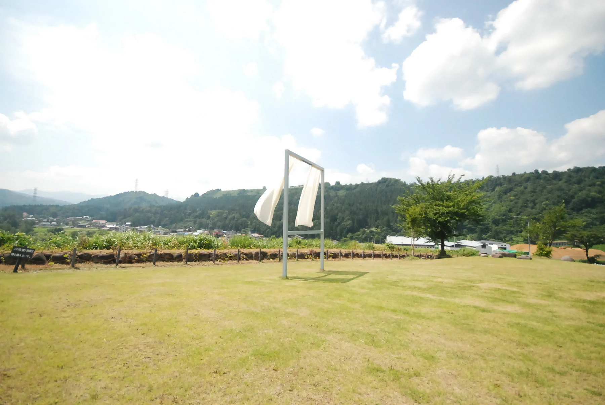
농촌 일상 공간환경의 경험이 예술작품
국내외의 유수한 비엔날레들은 정해진 최적의 기간에 효율적으로 볼 수 있도록 카테고리도 구분하고 전시밀도도 높여서 가장 짧은 시간에 가장 많은 작품을 보여주려 하는 추세이다. 전시 중간의 동선과 흐름, 밀도 등은 효율성을 최고의 가치를 중심으로 계획된다. 과정의 가치보다는 결과의 가치가, 경험보다는 정보의 가치가, 감성보다는 이성의 가치가, 분산보다는 집단의 가치를 더 중요하게 생각하는 모더니즘적 성격의 비엔날레나 트리엔날레로 대부분 진행 중이다. 에치고츠마리 대지의 예술제는 도쿄 23구에 해당하는 넓은 면적에 파편적으로 규칙없이 설치 해놓음으로써 방문객에게 커다란 미션수행의 의무를 넘긴다. 대부분의 사람이라면 한번에 다 보겠다는 생각이나 실천은 굉장히 힘든 일이다. 아마도 처음부터 이 예술제의 철학에 안보이게 있었을 것이다. 다 보는 것이 아닌 자연 안에서 인간이 다양한 감성적 경험을 할 수 있는 매개체로서 예술작품이 작동하기를...
다 보지 못해도 그 누구도 섭섭해 하거나 짜증내지 않을 것이다. 그 예술 작품을 보러 다니는 동안 주변의 농부를 만나고 농촌의 냄새와 주변의 나무, 산세를 경험하게 된다. 그러한 경험들은 예술작품을 경험 장치의 매개로 느끼게 하고 그 때문에 그 경험과정에 자연스레 융화되도록 한다. 이렇게 자연과 일치될 때 무념무상의 개념처럼 편안한 생각을 가지게 된다. 이성보단 감성이 작동하게 되며 작품을 모두 봤던 못 봤던 그 부분도 중요한 내용이 아닌 것이 된다.
그림 7 Ilya&Emilia Kabakovd의 The Rice Field 또한 텍스트의 차경기법과 자연의 배경을 작품의 일부로 하고 있다.
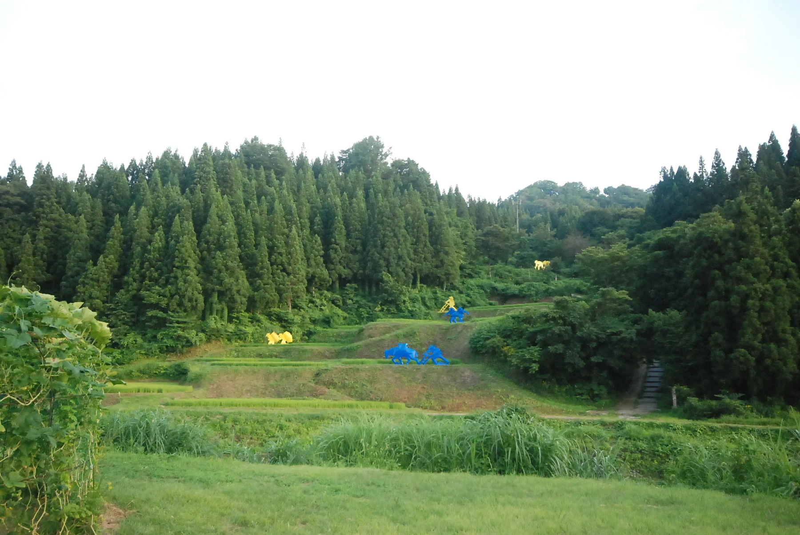
예술작품간 농촌 공간환경 경험의 과정이 그 가치를 발하게 되며 일상적 체험을 예술적 미학으로 승화 시킨다.사실 이러한 부분의 좀 더 깊은 해석을 살펴보자면 최근의 저명한 일본 미학자인 유리코 사이토(Yuriko Saito)가 제시한 ‘일상의 미학’에서 그 근거와 가치를 찾을 수 있다. ‘일상의 미학’은 ‘활동, 쾌 감각, 불확정성’의 개념을 통해서 그 가치를 얘기하는데 예를 들어 다도와 같은 어떠한 의도적 형식적인 미의 추구에 있어 그 차를 준비하기 위한 잎을 딴다던지 그것을 말리고 다리는 다양한 여러 가지 일상의 행위등도 그 형식적인 고상한 미적인 관습과 다르지 않다고 보는 것이다. 즉, 예술의 형식을 지니지 않았다 해서 미학의 대상에서 제외하는 것이 아니라 그 가치를 동격의 섬세한 지각활동으로 보는 것이며 이런 일상의 활동들이 완성되어야 하는 미적 형식을 위한 부수적 개념이 아니라 하나의 경험으로서 ‘미적인 가치’를 지닌 일상의 미학으로 보는 것이다. 일본의 ‘일상의 미학’ 개념 등이 에치고츠마리 대지의 예술제의 일상적 공간과 내용들 가치를 승격시키는 밑바탕의 사고들이 아닌가 싶다.
사토야마의 경관적 알고리즘 그리고 일상미학의 경험적 가치가 대지의 예술제를 떠받치는 커다란 틀이며 이를 통해 자연과 어울어진 과정의 예술제를 만들었다고 생각한다.
우리에게 남는 이미지는 시감적 예술작품이 아니라 그 예술작품의 공간적 경험이다.
공간환경디자인을 통한 예술의 다가치적 요소확보
그림 8 Tatsuo Kawaguchi의 Relation-Earth_the Big Dipper 작품은 실제 자생하는 식물이 작품과 함께 어울어져 매년 다른 모습을 연출한다. 기존 식생의 훼손이 아닌 자연과 공생하는 유기적 작품의 방향을 보여준다. (좌측사진 출처 : www.echigo-tsumari.jp (Photographed by ANZAЇ))
에치고츠마리 대지의 예술제의 공간환경적 특징은 기존의 공간환경을 전혀 훼손시키거나 변형시키지 않고 기존 맥락에 부합하는 개념을 유지했다는 것이다. 더 중요한 것은 공간의 유형적인 측면뿐 아니라 무형적으로 지니고 있는 컨텐츠적 측면도 유지하였다는 것이다. 더 정확히 말하면 유지한 것이 아니라 그 가치를 더욱 부각시켰다고 볼 수 있다. 이러한 공간환경과 예술작품을 통한 보존적 가치구현을 통해 일상적 내용들이 삶의 가장 기본적이고 충실한 사회적 문화적 중심을 결정하는 힘을 지닐 수 있음을 보여주고 있다. 평범한 것을 특별하게 하여 최대의 가치를 이끌고 평범한 반응을 감성적으로 미적으로 승화 시킨다.
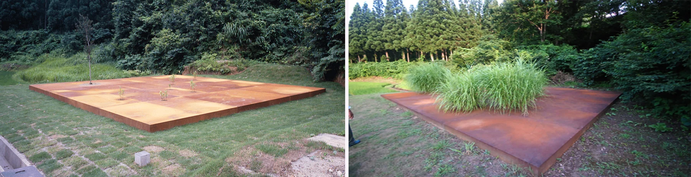
그림 9 마쓰다이로 가는 길거리에 설치된 Tetsuo Sekine의 Boys with Red Lion Cloths Returned
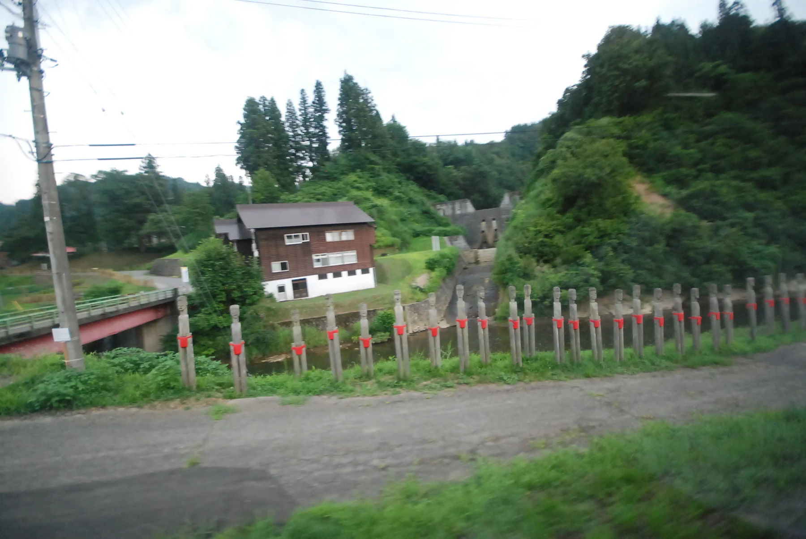
그림 10 Tetsuo Sekine의 Boys with Red Lion Cloths Returned 작품은 마쓰다이 역을 해 달려가는 버스 안에서 갑작스레 만날 수 있다.
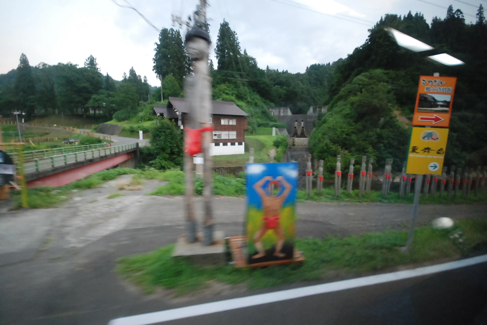
두 번째 특징은 공간의 무작위적인 순차적 경험이다. 편재된 예술작품들의 의도치 않은 발견과 기대심리를 통한 드라마틱한 감정을 보는 이로 하여금 유도하게 하는 공간의 순차적 경험이다. 에치고츠마리 대지의 예술제를 방문하다 보면 갑작스런 가이드의 멘트에 귀를 기울려야 한다. 왜냐하면 달리는 버스 안에서도 갑자기 길가에 있는 작품들과 조우할 수 있기 때문이다. 사실 이는 일본에 구현되어 있기 때문에 그들의 맥락과 어울리는 것이 아닌가 싶다. 일본 정원디자인 전략 중에 미에가쿠레(見え隠れ)라는 개념이 있다. 이는 경험의 시간적 순서를 중요하게 여기는 정원에 쓰이는 또 하나의 디자인 전략이다. 이것은 글자 뜻 그대로 해석하면 "보였다 안 보였다 함, 나타났다 숨었다 함,어른거림" 정도의 뜻인데 일본 정원을 살펴보면 방문객에게 전체를 보여주지 않고 힌트만을 주는 의도적 차단, 또는 부분적으로 풍치를 왜곡하거나, 밀식 조성된 차 오두막(tea hut)으로 만들어져 있다. 이에 전체를 본다는 것에 대한 기대감이 방문객을 유도하고 계속 나아가도록 하며, 그러다가 대체로 갑작스럽게 나타나게 되는 꽉 찬 신(Scene)은 꽤 드라마틱하다. 보는 이로 하여금 순차적 경험을 위해 시퀀스 개념으로 만들어진 공간 디자인의 개념이 참이 꽤 효과적이고 아주 디테일하게 감성적인데 대지의 예술제의 공간 구성에는 이러한 개념이 들어가 있어 방문객은 기대감에 즐길 수 있는 하나의 포인트가 숨어져 있다.
그림 11 코르텐강을 이용한 나무의 색조와 주변 형태와 순응하여 대지의 형상을 따라 자연스럽게 나타나는 Casagrande&Rintala의 POTEMKIN
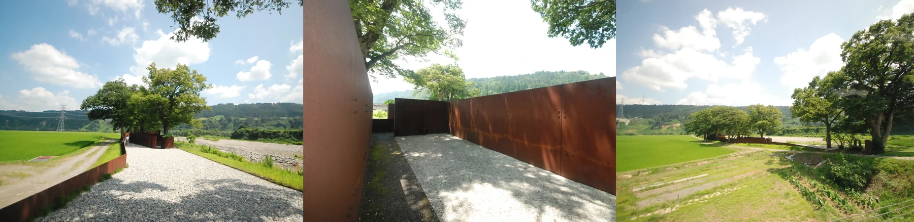
그림 12 Casagrande&Rintala의 POTEMKIN은 지역의 폐기장이었던 곳을 참여과정을 통해 예술작품 공간과 쉼터 공간으로 만든 지역민과 함께 한 사람사이의 예술을 근간으로 한 Social Sculpture이다.
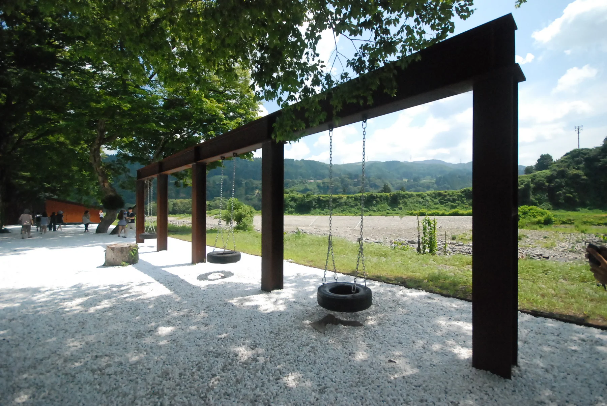
마지막 세 번째 특징은 예술작품의 공간이 사람과 사람, 사람과 자연 사이를 연결하는 매개체로 쓰인다는 점이다. 이러한 과정을 통해 예술이 특정 장소에서 재생을 위해 행할 수 있는 다양한 가치의 잠재적 측면을 보여주었으며 사람과 사람사이의 커뮤니티에서도 작동하는 방법을 보여주었다. 예술작품이 한 공간에 설치되기 위해 수많은 준비와 과정이 필요하다. 때로는 갈등의 시기이기도 하고 때로는 협동의 시간이 될 때도 있다. 이 또한 지역의 장소를 만들고 살리는 데 좋은 기회이다.지역 재생과 커뮤니티의 활성화는 집객요소와 구성원간의 소통이 가장 기본적이고 중요한 요소들이기 때문이다. 앞서 논한 것처럼 예술작품의 결과만 관조하는 예술제가 아니고 예술작품이
그림 13 Oscar Oiwad의 Scarecrow Project작품은 실제 지역민의 이름과 캐릭터를 기본으로 디자인되어 작품과 지역민의 삶이 자연스레 연결 되어 있다.
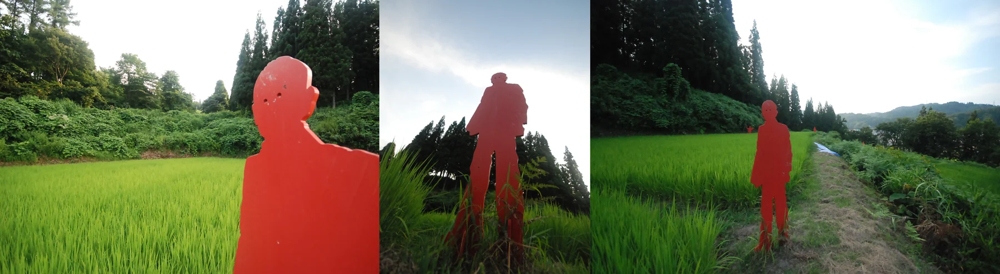
완성 되가는 과정에서의 스토리와 역사, 관련한 사람의 이야기 등을 접하면서 그 접점의 플랫폼이 그 장소와 공간이라는 것을 알 수 있다. 에치고츠마리 대지의 예술제에서 예술작품은 사람과 공간 사이를 연결시키는 매개체로 작동하고 있고 이는 지역 재생의 핵심이 되었으며 도시와 지역, 아티스트와 사토야마, 젊은이와 고령자 간 교류와 협동이 낳은 예술 작품이 마을, 논, 빈집, 폐교 등을 장소로 삼아 에치고츠마리 지역에 분산 배치돼 있다그림 14 마쓰다이의 Terraced Rice paddy field는 자연인지 인공작품인지 구분하기 힘든 자연이 바로 작품인 사례이다.
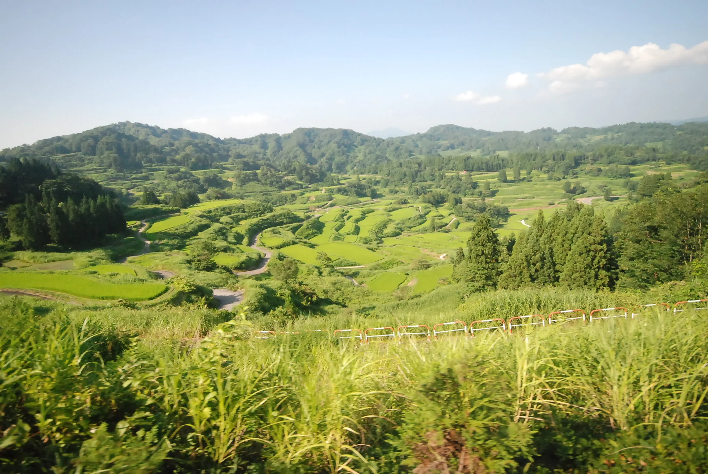
에치고츠마리 대지의 예술제는 예술과 자연의 경계를 허물고 새로운 유형을 만들어 냈다. 이는 예술작품을 과거의 전통적 의미로만 바라보지 않고 지역적, 맥락적, 공간적 관점에서 바라봤기 때문에 얻은 결과이고 또 2차원적인 관조하는 예술이 아닌 참여하고 과정을 중시하는 입체적 측면에서 바라본 결과이다. 효율과 기능중심의 사고만으로는 접근할 수 없는 내적 디세뇨(Interno Disegno)의 창의적 가치가 한 번에 보기 힘든 지붕도 출입구도 없는 예술제를 만들어 냈다.
참으로 아이러니하지만 에치고츠마리 대지의 예술제는 참으로 즐겁고 행복하게 즐긴 ‘불편한’ 예술제였다.